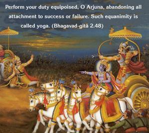
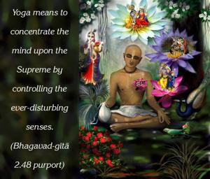
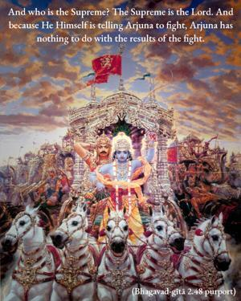
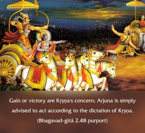
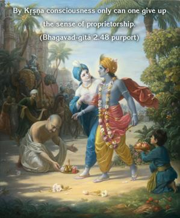

Perform your duty equipoised, O Arjuna, abandoning all attachment to success or failure. Such equanimity is called yoga.





Kṛṣṇa tells Arjuna that he should act in yoga. And what is that yoga? Yoga means to concentrate the mind upon the Supreme by controlling the ever-disturbing senses. And who is the Supreme? The Supreme is the Lord. And because He Himself is telling Arjuna to fight, Arjuna has nothing to do with the results of the fight. Gain or victory are Kṛṣṇa’s concern; Arjuna is simply advised to act according to the dictation of Kṛṣṇa. The following of Kṛṣṇa’s dictation is real yoga, and this is practiced in the process called Kṛṣṇa consciousness. By Kṛṣṇa consciousness only can one give up the sense of proprietorship. One has to become the servant of Kṛṣṇa, or the servant of the servant of Kṛṣṇa. That is the right way to discharge duty in Kṛṣṇa consciousness, which alone can help one to act in yoga.
Arjuna is a kṣatriya, and as such he is participating in the varṇāśrama-dharma institution. It is said in the Viṣṇu Purāṇa that in the varṇāśrama-dharma, the whole aim is to satisfy Viṣṇu. No one should satisfy himself, as is the rule in the material world, but one should satisfy Kṛṣṇa. So unless one satisfies Kṛṣṇa, one cannot correctly observe the principles of varṇāśrama-dharma. Indirectly, Arjuna was advised to act as Kṛṣṇa told him.